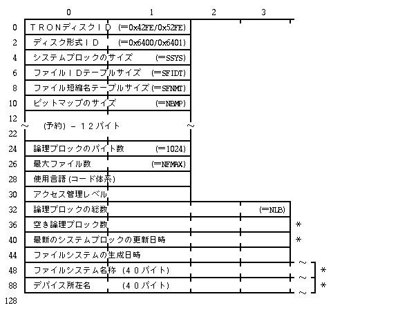
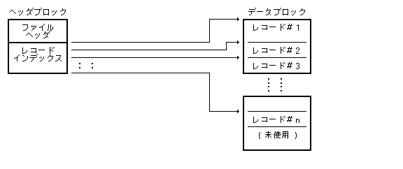
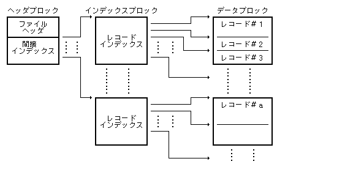
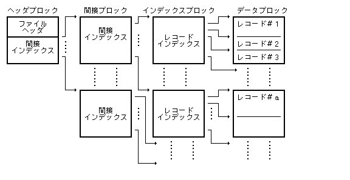
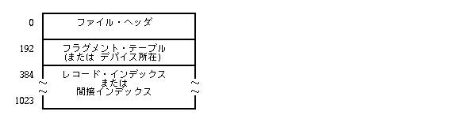
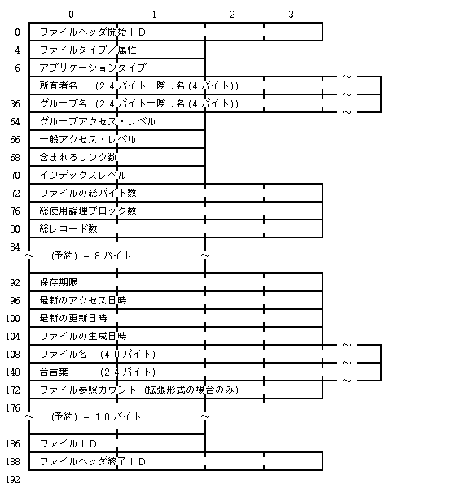
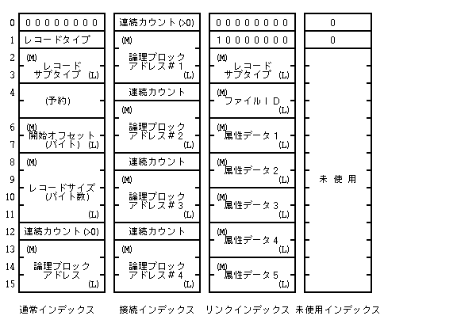
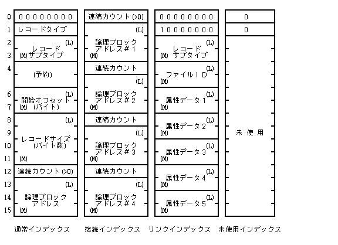
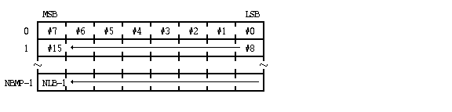
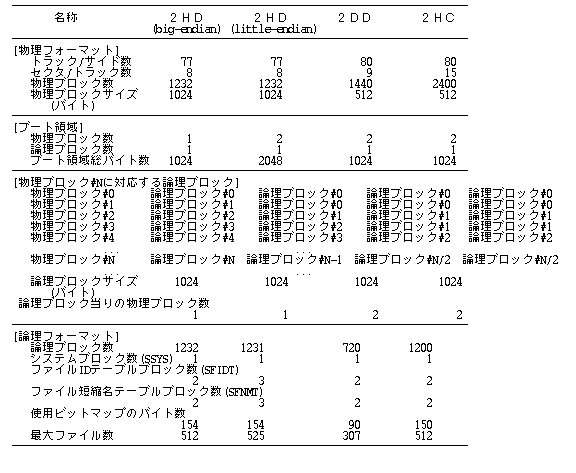

У цьому розділі описується фізична та логічна структура файлової системи специфікації BTRON (BTRON File System), правила організації тома диска, заголовки, розміщення файлів та таблиці записів.
Файлова система BTRON розроблена для підтримки мережевої структури реальних та віртуальних об'єктів (Real/Virtual Body System). Вона забезпечує високу надійність зберігання даних, швидку навігацію по записах файлу, а також сумісність із різними типами фізичних носіїв (дискети, жорсткі диски, flash-пам'ять).
Основний блок розміщення даних у файловій системі називається сектором або блоком тома. За замовчуванням розмір фізичного сектора/блока становить 1024 байти (1 КБ). Усі адреси блоків та зсуви у томі обчислюються у кількостях блоків розміром n байт.
Том файлової системи BTRON ділиться на системну область тома (System Block) та область даних файлів (File Data Region).
Системний блок розміщується на початку тома диска і містить глобальний заголовок файлової системи, таблицю ідентифікаторів файлів (FID Table), таблицю назв файлів (File Name Table) та растрову карту вільних блоків (Allocation Bitmap).

Системний заголовок тома (Volume Header) розміщується у перших 128 байтах системного блока і має наведену нижче бінарну структуру:

Опис полів системного заголовка тома:
| Стандартний формат (Big-Endian) | 0x42FE |
| Реверсивний формат (Little-Endian) | 0x52FE |
| Стандартна файлова система BTRON | 0x6400 |
| Розширена файлова система BTRON | 0x6401 |
SFIDT = (NFMAX * 4) / 1024
SFNMT = (NFMAX * 4) / 1024
| NBMP (для 1-бітової карти) | ≧ NLB / 8 / 1024 |
| NBMP (для 4-бітової карти) | ≧ NLB / 2 / 1024 |
0x0021 для TRON Code / кирилиці).
| 0 | Нормально змонтований чистий том (Clean) |
| 1 | Том потребує перевірки утилітою fsck |
| 2 | Критична помилка тома (Corrupted) |
Растрова карта зайнятості блоків (Allocation Bitmap) використовує біти "0" для позначення вільних блоків та "1" для зайнятих блоків тома.

Таблиця ідентифікаторів файлів (File ID Table / FID Table) перетворює унікальний ідентифікатор файлу FID (File ID) у фізичну номерну адресу блоку заголовка файлу.
Максимальна кількість файлів у томі позначається константою NFMAX. Кожен запис у FID-таблиці займає 4 байти (32-бітний номер блока). Якщо FID-запис дорівнює 0, цей ідентифікатор файла вважається вільним.

Таблиця назв файлів (File Name Table / Short Name Table) використовується для швидкого пошуку ідентифікатора файла FID за його символьною назвою.

Хеш-значення назви обчислюється по 10 перших 16-бітних словах символьного рядка NAME[10] за допомогою операції XOR:
hash = 0;
for (i = 0; i < 10; i++) {
hash = hash ^ NAME[i];
}
Кореневий каталог тома файлової системи BTRON має зарезервоване значення File ID = 0. Він є початковою точкою ієрархічного дерева реальних та віртуальних об'єктів тома.
Файл у специфікації BTRON складається з Блока заголовка (Header Block), Блоків даних (Data Blocks) та Індексу записів (Record Index).
Залежно від розміру та кількості записів, файл використовує 0-рівневу (прямий заголовок), 1-рівневу або 2-рівневу непряму індексацію записів.



Блок заголовка містить метадані файлу, часові мітки, права доступу, таблицю локації фрагментів дискових блоків та первинну таблицю записів.

Перші 192 байти блока заголовка займає Заголовок файлу (File Header Record), який містить такі основні поля:

0x54726f6e — "Tron").
TTTT xxxx BAPO xRWE):
| T (4 біти) | 0: Звичайний файл, 1: Файл каталогу / об'єкта |
| RWE (3 біти) | Права доступу (Read, Write, Execute) |
| P, O, A, B | Прапорці захисту, стиснення та розширень додатка |

Таблиця фрагментів (Fragment Table) описує послідовність дискових секторів/блоків, з яких складається файл. Якщо файл фрагментований, він описується декількома безперервними дисковими сегментами (початковий блок + кількість блоків).

Індекс записів (Record Index) перетворює порядковий номер запису файлу у його фізичний зсув та розмір всередині блоків даних.

Для великих файлів із великою кількістю записів застосовується 1-рівневий або 2-рівневий непрямий індекс (Indirect Record Index), який дозволяє зберігати до 655360 записів у одному файлі.


Блоки даних (Data Blocks) зберігають безпосередній корисний вміст записів файлу. Якщо запис перевищує розмір одного блоку, він простягається через декілька послідовних або фрагментованих блоків даних.

Спрощена специфікація файлової системи Semi-BTRON призначена для вбудованих контролерів та пристроїв із обмеженими ресурсами пам'яті.


